UX Design + Data Science · Amazon-Sponsored Capstone 2026
HuskySupport 🐾
A Slack-based predictive assistant built for Amazon that detects device anomalies before they
become crashes, surfacing plain-language root causes and guided resolution paths to employees and IT system engineers alike.
UX DesignData ScienceAmazonCapstone Project & Contract Work
Most system failures are preceded by measurable signals such as increasing CPU temperature, high memory utilization, longer boot times,
and degraded battery health. But users only see symptoms: a slow laptop, a freezing screen, a black screen. By the time they notice, it's already too late.
Traditional IT support is reactive by design. A crash happens → an employee opens a ticket → they seek IT support → they repeat their problem to a technician starting from scratch.
Throughout this process, they've lost unsaved work, wasted hours, and disrupted their workflow.
How might Amazonians experiencing technical problems receive timely and accurate hardware problem diagnoses,
while Amazon IT support engineers can more quickly identify device issues so that resolution time is reduced and work disruption is minimized?
12
device features monitored
4
resolution routing paths
~200
hours invested
300k+
computers analyzed
Goals
What we set out to build.
1
Shift Amazon IT support from reactive repair to predictive prevention - detect issues
before crashes occur and surface them proactively so employees can act before losing work or time.
2
Build a random forest model trained on threshold-defined device telemetry across 12 features
(memory utilization, boot time, CPU capacity, battery cycles, and more) to predict imminent system failures and surface features with anomalies.
3
Surface predictions in plain language that non-technical users can act on, and route them to the
right resolution path (self-fix, backup & replace, online support, or in-person support) without misdiagnosed
tickets or wasted time.
Process
Six months, two disciplines.
The project ran across two parallel tracks, UX Research and Design, and Data Science, that converged into a single product.
I worked on both, initially joining UX before shifting significant effort to the data team when capacity gaps emerged. While I am primarily a UX/UI Designer,
I have studied machine learning and data science for a few years. This project was a perfect example of why being technologically literate as a designer matters.
Jan – Feb
Discovery & Research
In-person conversations at Amazon HQ, Zoom interviews, and Qualtrics surveys across IT engineers and end users. Mapped pain points and failure moments in the current IT support flow.
Feb – Mar
Model Foundation
Defined 12 device telemetry features. Wrote variable algorithms, ran initial analyses, and began training the random forest model on various thresholds discovered through data analysis.
Mar – Apr
UX Design
Translated research into a Slack-based interface. Designed the proactive DM alert pattern, anomaly surfacing, and four resolution routing paths.
Apr – May
Threshold Refinement
Defined and tested failure thresholds per feature. Iterated on the model to improve crash detection accuracy and cut down on unnecessary features.
May – Jun
Integration & Pitch
Connecting the Slack frontend with the backend model. Preparing pitch presentation for Amazon stakeholders and capstone class. Working on user validation study.
Ongoing Throughout
Team Collaboration
Weekly scope syncs, cross-team observations, and shared research docs. Regular pitch presentations to the company partner and capstone instructors.
Tech stack ideation
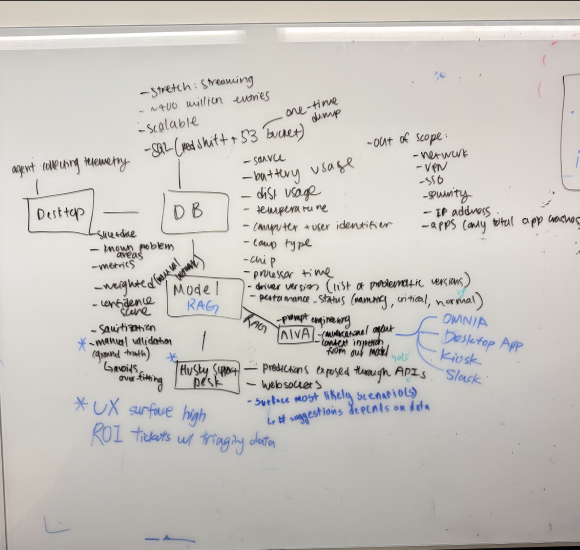
Early ideation -> mapping the technical architecture and tool choices
User Research
Talking to both sides of the ticket.
We conducted research across two distinct user groups: IT Support Engineers who triage and resolve issues, and end users (employees) who experience device problems. Understanding both perspectives was critical to designing a system that serves each without adding friction to either.
🗣️
In-person conversations
Informal sessions at Amazon HQ that revealed how IT support actually gets done day-to-day, much of which wasn't reflected in the official ticket workflow.
📹
Zoom interviews
Structured interviews with IT engineers and employees, focused on describing specific crash incidents like timeline, symptoms, what they did, what they wished they'd known.
📋
Qualtrics surveys
Comprehensive quantitative surveys measuring issue frequency, time lost per incident, familiarity with self-resolution options, and satisfaction with existing IT support.
🔁
Cross-team synthesis
Research findings were shared across UX and data teams simultaneously. Data insights regularly reshaped which telemetry features the model represented, and vice versa.
Research in the field
Research documentation & synthesis
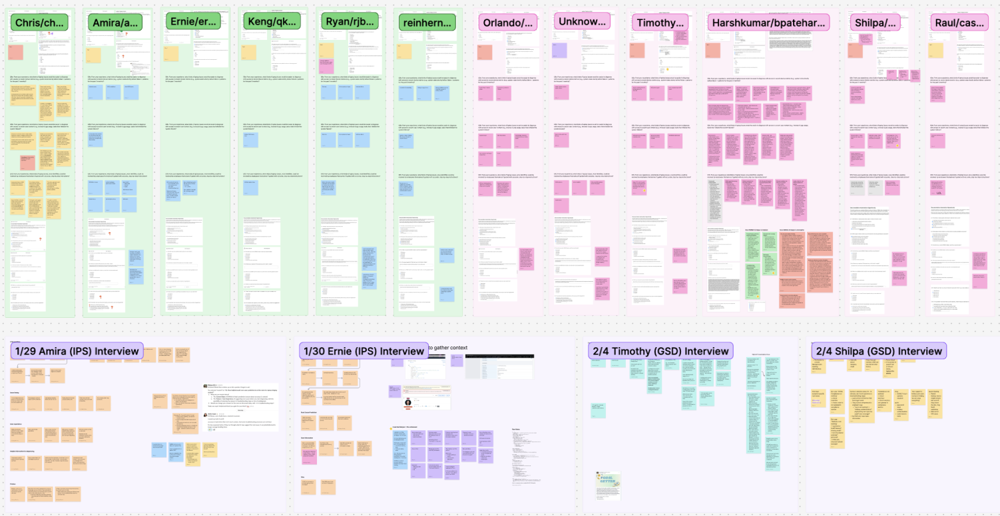
User journey mapping
User story map
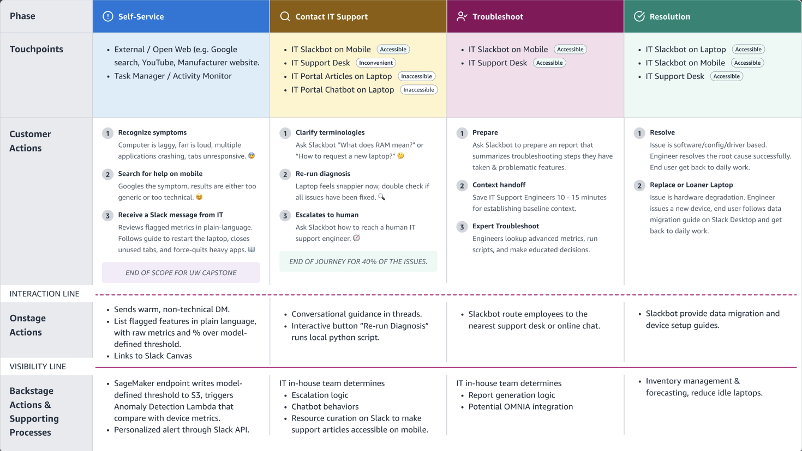
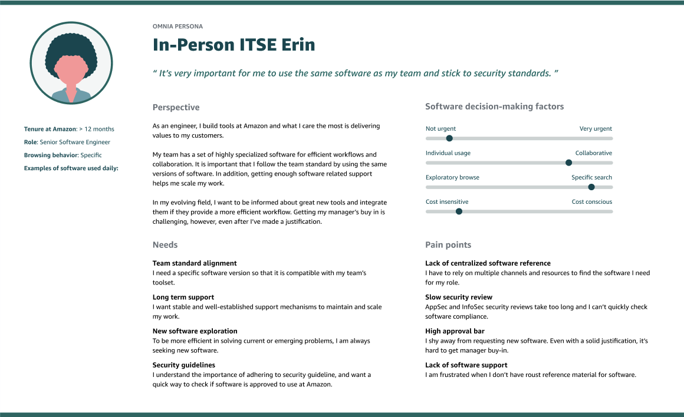
Persona -> IT Support Engineer
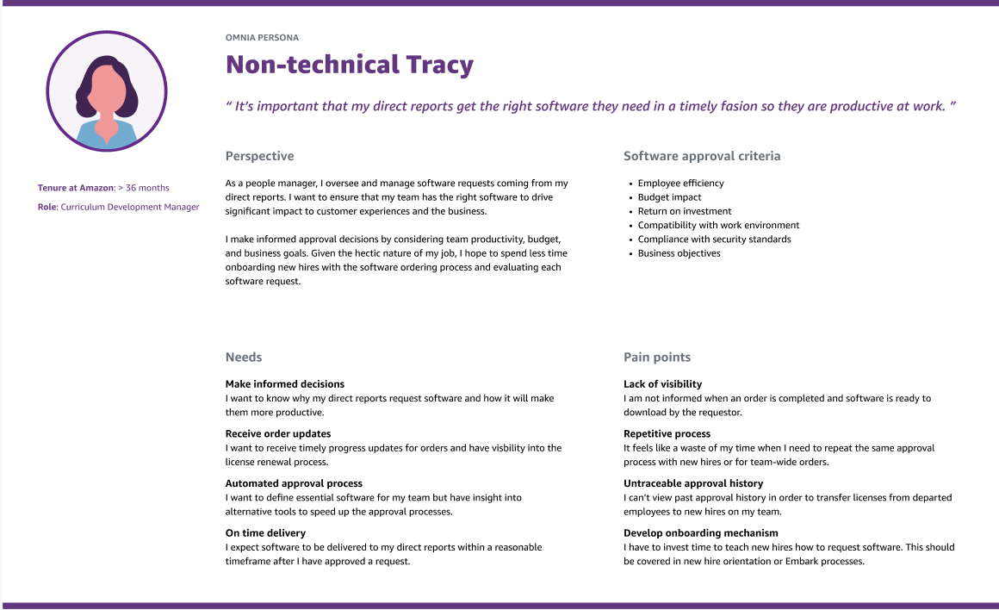
Persona -> Amazon Employee (end user)
Sample interview questions
A selection of questions asked during both IT engineer and end-user interview sessions.
“
Walk me through the last time your device crashed or slowed significantly. What did you notice first?
“
How did you decide who to contact for help, and what process, if any, went into your decision?
“
If you received an alert that your device was about to have a problem, what information would you need to feel confident taking action on your own?
“
[IT Engineers] What is the most common piece of information missing when an employee submits a ticket about a device issue?
“
[IT Engineers] If you could see a device's telemetry history before a ticket was filed, how would that change your resolution process?
The Product
Proactive alerts, right where work happens.
HuskySupport lives entirely inside Slack, which is the tool Amazonians already use all day. When the model detects anomalous telemetry patterns
that exceed failure thresholds, it sends a proactive DM to the affected employee with a plain-language summary of detected anomalies and a guided resolution path.
If the employee is able to follow the resolution steps to a solution, they could avoid tickets, having to go to the IT office, and spending a lot of time troubleshooting.
The interface was designed with non-technical users as the primary audience. The resolution routing, self-fix, backup & replace, online support, or in-person support, is determined by
the model's output and issue severity, so employees always know their next step.
Early iteration
Initial design exploration
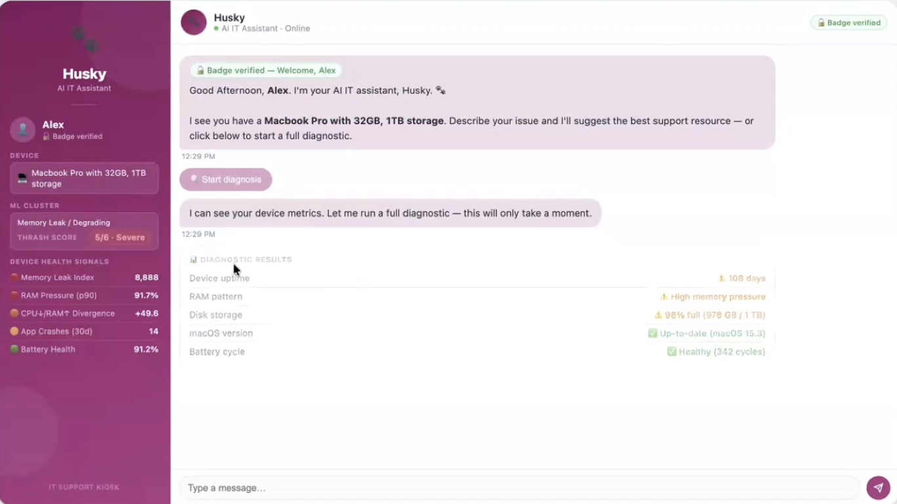
💡
Design Decision: Removing Confidence Scores
An early version surfaced confidence scores alongside each flagged anomaly. Through research, we found that scores
introduced anxiety rather than clarity. Non-technical users didn't know what 87% meant or whether to act on it.
We removed confidence scores entirely and instead surface all detected anomalies in more standard language,
letting the resolution routing guide the user's response. This is one of my key impacts on the final product.
Final design frames & screen mock
Shipped Slack interface
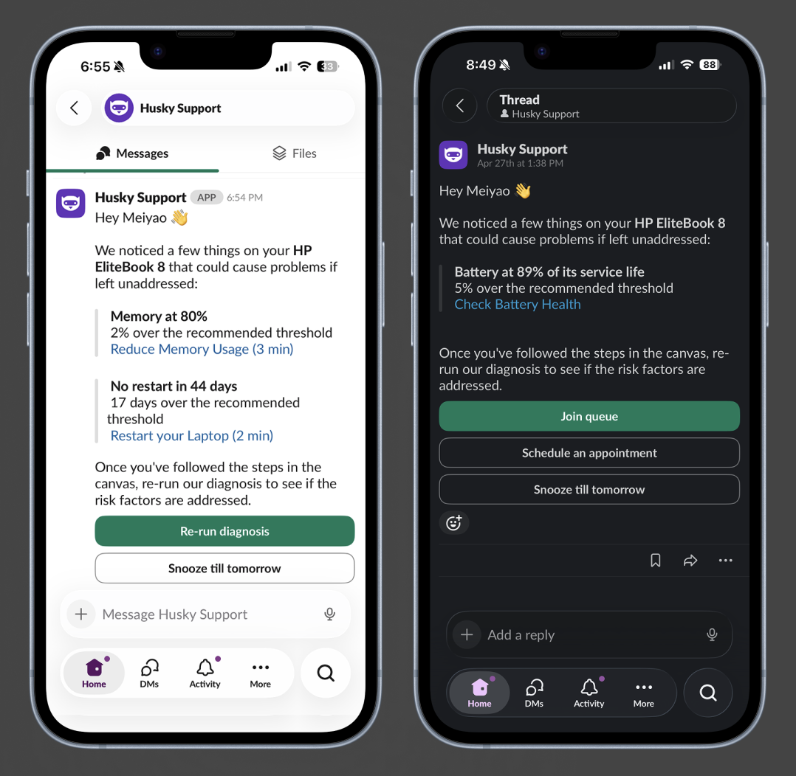
Final Slack interface: Proactive DM alert, anomaly list, and resolution routing
Product in context
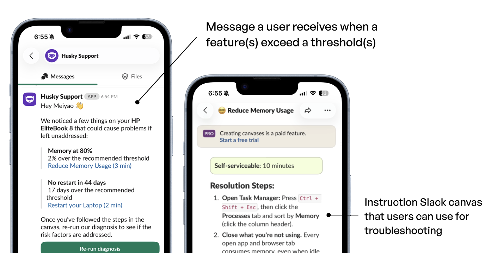
HuskySupport resolution process as seen by an Amazon employee in Slack
Final presentation
Figma deck — embedded
Final capstone presentation. View full deck in Figma ↗
Final poster
Capstone presentation poster: Shipped version
Technology
What's under the hood.
🐍
Python (VSCode)
Primary language for all model development. Variable algorithm implementation, threshold testing, and the random forest training pipeline were all written and iterated in Python.
☁️
AWS with SageMaker
Cloud infrastructure for backend processing. Houses the model serving layer and telemetry data pipeline that feeds device statistics into the prediction system in real time.
🤖
Claude (Anthropic)
Used to help quickly iterate on the frontend layer, translating model outputs into human-readable alerts that non-technical employees can understand and act on.
🌲
Random Forest Model
Trained on various threshold levels of telemetry data across 12 device features. Detects anomalies and predicts probability of upcoming failure for surfacing in the UI.
💬
Slack API
Frontend delivery layer. Proactive DMs are sent via Slack's API when anomalies are detected. Users can respond and route to support without ever leaving Slack.
📊
Qualtrics
Used for both user research and user validation through topics like measuring issue frequency, time lost to crashes, satisfaction with existing IT support, and self-resolution familiarity.
Model & data science
The random forest model was trained on telemetry data from over 300,000 devices. Below are key visualizations from the data science work including the model itself, feature importance, variable graphs, and backend architecture.
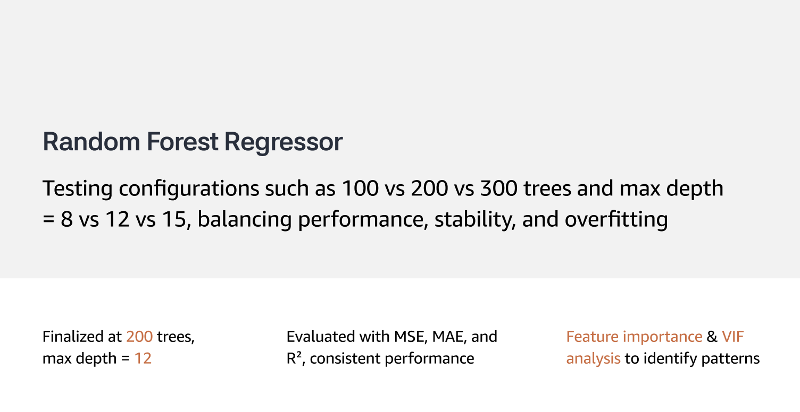
Random forest model structure
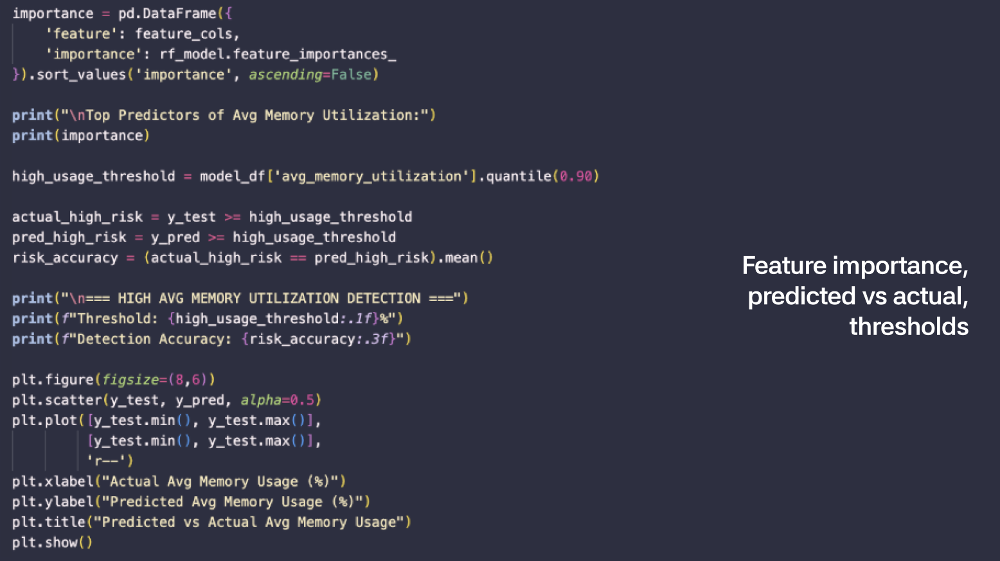
Feature importance ranking with 12 telemetry variables
Why these features?
Each of the six telemetry features was selected based on its measurable correlation with device failure events in the dataset,
and its interpretability to a non-technical audience. Features that did not survive a Variable Inflation Analysis, were too similar to other features, or were static/unchangeable were deprioritized.
💾
Memory Utilization -> Sustained high memory usage (above ~78%) was one of the strongest predictors of imminent crash. It's also something employees can act on directly by closing applications, restarting their laptops, or requesting a RAM upgrade.
🌡️
P90 CPU Temp -> Sustained elevated temperatures above 88 degrees Celsius caused more app crashes and indicated cooling system issues or high-load conditions. Thermal anomalies often preceded hard failures, but also indicated storage issues and potential CPU throttling.
🔋
Battery cycles -> Battery health degrades predictably with cycle count. Devices approaching or exceeding manufacturer cycle limits (93% of its 4-year lifespan at Amazon) showed meaningfully higher failure rates, and this is a metric ITSE employees can immediately understand and replace devices accordingly.
🖥️
Uptime Days -> Devices with an uptime of over 27 days were more prone to crashes, which is solved with a simple restart.
💿
Max CPU Usage -> CPU usage over 90% resulted in more app crashes. It's a straightforward metric with a clear resolution path: restart, close applications, or seek support if you are not able to delete/exit certain applications.
⏱️
Processor Time -> An increase in processor time (67%) relative to a device's own baseline was a reliable and visible early signal of underlying storage or software degradation.
Variable graphs
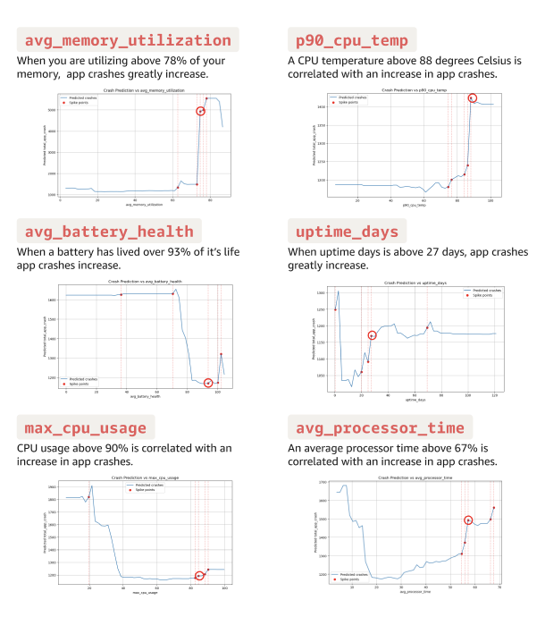
Telemetry feature distributions used to define failure thresholds.
Model weights & code
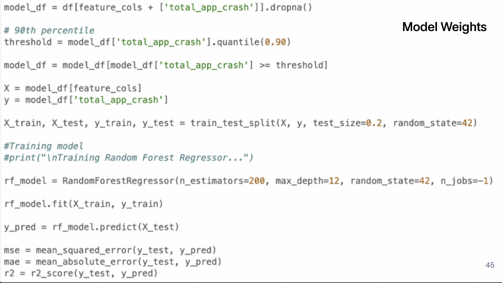
Model implementation: weights and core Python code
Backend architecture
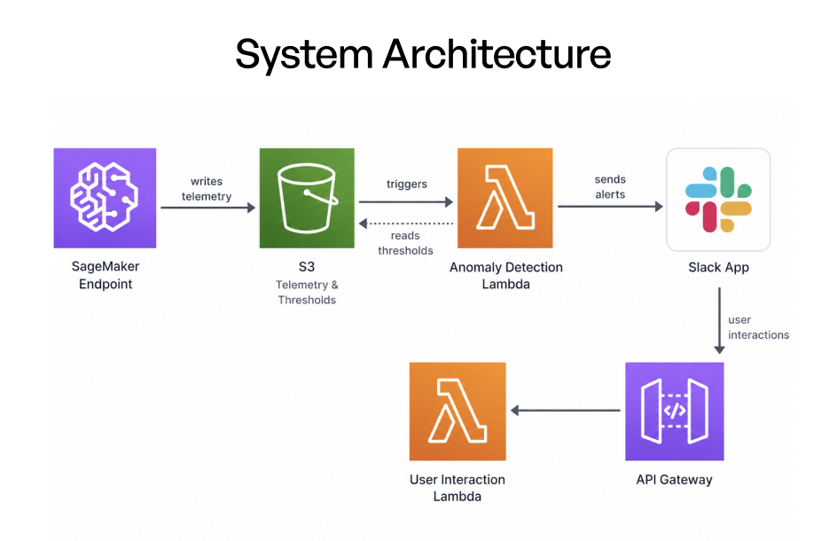
AWS backend architecture: telemetry pipeline to Slack delivery
My Role & Contributions
Two teams, one project.
I started on the UX research and design team, but about halfway through the project the data team needed more capacity.
Because I have a background in data science, I shifted significant effort there without fully stepping back from UX. At peak, I was averaging
35 hours per week on this project alone. I worked as a liason between the teams, attending both team meetings.
🎨 UX Team
Research & Design
Supported and conducted user interviews with IT engineers and end users
Synthesized and summarized research findings across sessions
Helped write and design the Qualtrics research surveys
Translated research insights into design concepts and interface decisions
Contributed to the Slack chatbot frontend interface design
📈 Data Team
Model & Analysis
Wrote algorithms for all 12 device feature variables
Tested variable implementations and debugged edge cases
Helped define and refine failure thresholds with my data science teammate
Performed analyses to evaluate model accuracy and coverage
Helped write the final random forest model implementation and research documentation
The team
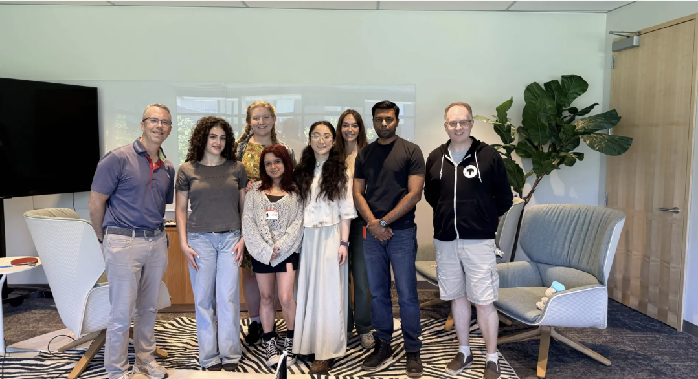
The HuskySupport team at Amazon HQTeam collaboration session
Working across both teams gave me an unusually complete view of the product. Understanding exactly what the model could and couldn't surface made me a better designer, and understanding what the UX needed made me a better data scientist on this project.
Team Collaboration
How we worked together.
Five people, two disciplines, one product. Keeping the UX and data tracks aligned required constant collaboration with regular scope syncs
that kept both sides from drifting in directions that would cause issues for the other's work.
📅
Weekly scope meetings -> We discussed the current state of the project, reviewed any new feature proposals against their impact on both tracks, and made explicit decisions about what to hold constant. This prevented late-stage scope creep that would have cost the timeline.
🎤
Pitch presentations -> The team collaborated on pitch decks presented to Amazon stakeholders and to our capstone class. These forced us to articulate the product's value clearly, and the feedback loops sharpened both our problem framing and our demo.
🔄
Cross-track knowledge sharing -> User research findings were regularly shared with the data team, and model output characteristics regularly informed UX decisions. We compared notes and redefined assumptions frequently, so the different tracks were never fully siloed.
Takeaways
What this taught me.
🎯
Data without design is useless. The model's output will be entirely meaningless if it isn't conveyed in a way every employee can act on. A 92% accurate prediction
that confuses a non-technical user changes nothing. UX matters.
📝
Document your decisions, even the imperfect ones. Even when the model's accuracy isn't where we want it yet,
it's critical to justify why we made the development choices we did so that any team who picks this up after us can understand the reasoning and build forward rather than from scratch.
🚧
Late scope changes are expensive for the whole team. Changing scope near the end of the project
can create disruptions across design, model, and backend. Locking scope early is a practice I'll carry forward.